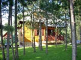
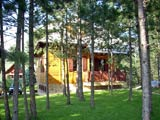

Vila Family
Vila Family se nalazi na centralnom platou regiona Kaludjerskih Bara. Udaljena je od restorana „Jeremičak“ oko 200m a od hotela „Omorika“ i restorana „Kurta“ oko 500 m. Vila je kategorisana sa četiri zvezdice * * * * Novosagradjena pošta je na svega 20m. Do kuće se može doći kolima a obezbedjena su i parking mesta.
 

Vila Family je novoizgradjeni objekat, prilikom čije gradnje i opremanja smo se trudili da ničim ne narušimo lepotu prirode i tarski duh. Objekat, po uzoru stare tarske kuće, napravljen je od prirodnih materijala, poštujući potrebe i zahteve modernog doba. Kuća ima centralno grejanje, a zahvaljujuci dobroj izolaciji, zimi je topla, a leti idealna za beg od tropskih vrućina. Objekat se sastoji od 3 apartmana.